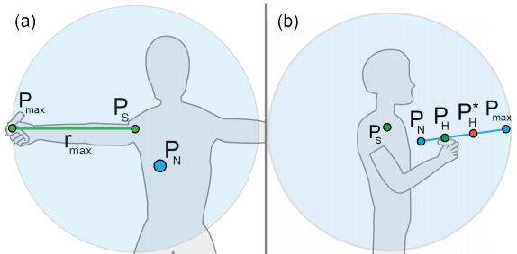
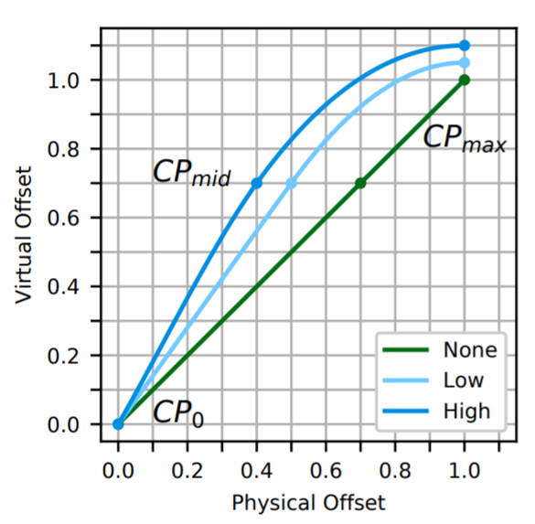
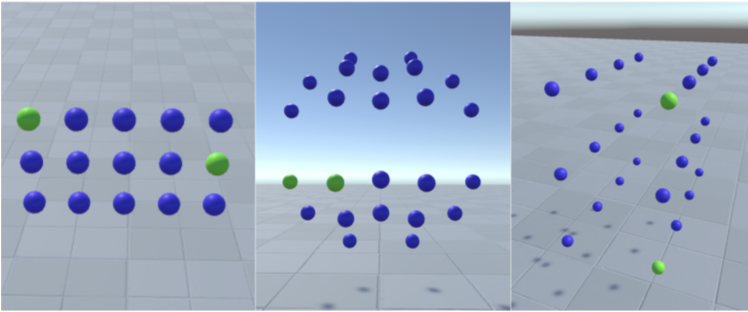
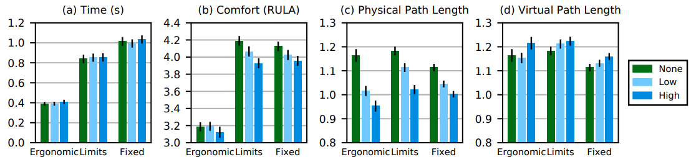
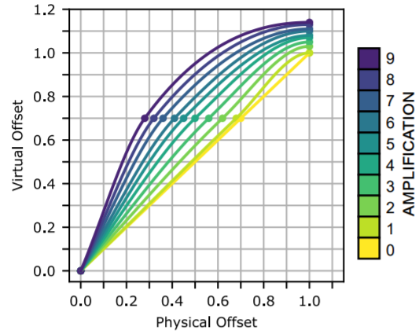
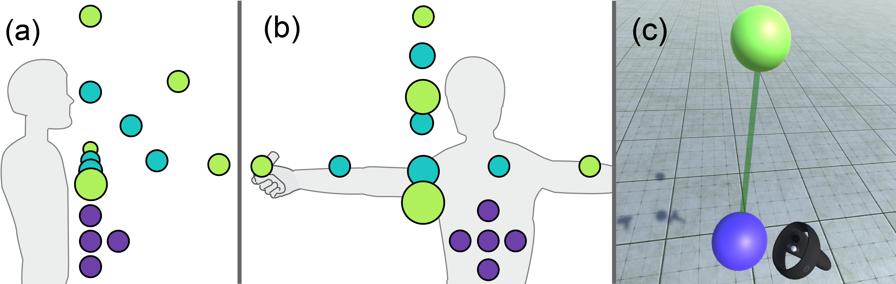
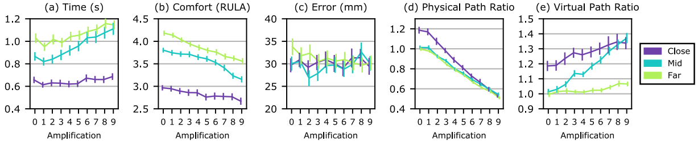
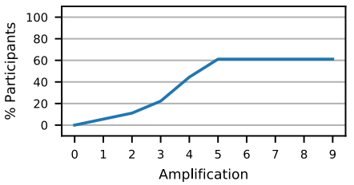

Quick Facts
- We can increase user comfort in VR using input amplification: transforming small arm movements into larger ones.
- Previous input amplification reduces body ownership, the user's feeling of being connected to their virtual body. We remedy this by using a non-linear amplification technique with Hermite curves.
- Non-linear input amplification provides ergonomic improvement in VR to a similar degree to the state-of-the-art.
- You can amplify user movements with this technique by up to 20% of their arm length before reducing body ownership, 30% before reducing accuracy, and 20% before most users notice it.
- The more video games people play, the more likely they are to notice amplification earlier. Some participants with minimal gaming experience didn't notice amplification at all!
Abstract
Input amplification enables easier movement in virtual reality (VR) for users with mobility issues or in confined spaces. However, current techniques either do not focus on maintaining feelings of body ownership, or are not applicable to general VR tasks. We investigate a general purpose non-linear transfer function that keeps the user's reach within reasonable bounds to maintain body ownership. The technique amplifies smaller movements from a user-definable neutral point into the expected larger movements using a configurable Hermite curve. Two experiments evaluate the approach. The first establishes that the technique has comparable performance to the state-of-the-art, increasing physical comfort while maintaining task performance and body ownership. The second explores the characteristics of the technique over a wide range of amplification levels. Using the combined results, design and implementation recommendations are provided with potential applications to related VR transfer functions.
Technique
- The user begins by defining a neutral point (PN), and their max reach (Pmax).
- The system gets a percent offset based on the distance of the user's hand between their neutral point and their max reach.
- That percent offset is plugged into an amplification function containing a Hermite curve, which returns an amplified hand offset, which is then applied to the virtual controller.
Experiment 1: Proof of Concept
We tested two amplification functions to make sure that they match the performance of the state-of-the-art, Erg-O. We call them Low and High respectively. Low has more subtle amplification while High is more aggressive.
We tested these functions with a two-target selection task in three task layouts: a small grid at the user's waist, a larger bubble around the user's reach, and a large grid making the user walk around.
We found similar results to Erg-O, noting that in either case our technique provided better ergonomics with minimal effect on accuracy.
Experiment 2: Amplification Functions
We then tested our technique at a variety of different amplification strengths increasing gradually from 0% to 50% of the user's arm's reach.
We tested these functions with a two-target selection task, with targets at three distances from the user's body: close (purple), mid-range (green), and far (blue).
We found that we can amplify user movements with this technique by up to 20% of their arm length before reducing body ownership, 30% before reducing accuracy, and 20% before most users notice it.
Unexpected result! We found that users that played video games were more likely to notice amplificaiton happening. Many non-gamers didn't notice amplification happening at all. The below graph shows the amplification level and the percentage of participants who noticed:
What Can We Learn?
- Consider the Task: How far do users usually reach using your app? Tailor your input amplification to your user's typical reaching motions.
- Consider the Function: Watch how much you're offsetting the user's hand so they don't lose their sense of body ownership. The slope of the amplification function is an important factor in its usability, take it into consideration when designing an amplification function.
- Consider the Person: How much experience do your users have with VR and gaming in general? You may be able to get away with more amplification if you don't expect them to be very experienced.
Publication
Johann Wentzel, Greg d'Eon, and Daniel Vogel. 2020. Improving Virtual Reality Ergonomics through Reach-Bounded Non-Linear Input Amplification. In proceedings of the ACM CHI Conference on Human Factors in Computing Systems (CHI ’20). ACM, New York, NY, USA, Paper 246, 12 pages. DOI: https://doi.org/10.1145/3313831.3376687
Contact Us
Questions? Feel free to contact:
- (MMath student, University of Waterloo)
jdwentze [at] uwaterloo.ca - (PhD student, University of British Columbia)
gregdeon [at] cs.ubc.ca - (Assistant Professor, University of Waterloo)
dvogel [at] uwaterloo.ca